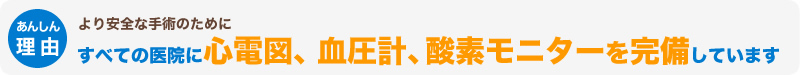

インプラントならアイデンタルクリニック トップページ > 安心して治療していただくためにアイデンタルクリニックが大切にしていること
当院は歯科専用ＣＴ（コンピューター活断撮影器）を完備しております。
歯を支えるアゴの骨には“くぼみ”や“傾き”があり、神経や血管がたくさん通っています。それはとても複雑で、一般のレントゲン写真では、骨の影になった神経や血管等を確認できません。
したがって、ＣＴはインプラント治療に欠くことのできない設備です。
当院は、ＣＴ撮影と診断を最終治療の有無に関わらず無料で提供していますので、インプラントの治療をお考え・お悩みの方は、気軽にご利用ください。
法律的には「歯科医師免許」を持っていれば、誰でもインプラント治療ができます。しかし、その技術や知識には大きく差があるのは事実です。
一般的に外科医が「ベテラン」と言える症例数は200症例と言われております。当院での年間の平均施術本数は、5,500本 累計施術本数2万8千本以上と日本トップクラスの実績を誇ります。（2013年12月現在）
院長をはじめとする当院のドクター陣は、一人平均年間500本以上インプラントの施術をチーム体制で行うことで、治療レベルの平準化を図っております。
より多くのドクターの目により、患者様に最もふさわしい治療計画を立てるということは、インプラント専門医院だからこそのメリットでもあり、個人開業医ではなかなか実現できない事でもあります。
インプラント手術には「経験豊富な麻酔医の立会い」「厳密な生体のモニタリング」が必要不可欠です。
手術を受けられる方は、自覚のある無しに関わらず、何らかの全身疾患を合併されていることが多いものです。 同時に、インプラント手術は精神的な緊張を伴うことが多く、心臓や脳に負担がかかりやすい状態にあります。
つまり、「いかに患者様の緊張を和らげるか？」「手術中の患者様の全身状態を正確に把握するか？」が極めて重要です。
当院では全身麻酔１万症例以上の麻酔医が常駐し、生体モニターをつうじて患者さまの「手術中の安全」を守っております。
WSEシステムとは、当院の理念であるWonderful Smile for Everyone !
(みんなに最高の笑顔を！)を実現させるシステムのことで、
アイデンタルクリニックに関わるすべての人々が
幸せになれるようバックアップいたします。
カウンセリングからインプラント手術まで、担当ドクターと
麻酔医がチームとなって行います。また症例によっては複数の
ドクター、麻酔医が、患者様にふさわしい治療を検討いたします。
この13人のドクターと3人の麻酔医、31名のスタッフが、
月220例500本の施術数を可能にしています。
BLSとは、一次救命処置の略称です。インプラントを行っている歯科医院で、AEDを設置している医院はどのくらいあるでしょう？またAEDを設置していても、使えなければ全く意味がありません。
当院では、全スタッフが一次救命処置である、心肺蘇生法、窒息時の対応法、軌道の確保、AEDの使用方法を学び、実践で基づいたトレーニングを受けております。いざという時に使用できない事には安全が確保できているとは言えません。
インプラントは外科手術ですので、一定のリスクを伴います。その中で、人命に係るような致命的な合併症や偶発症の事故というのは、非常に稀です。
しかし、どのような手術においても、その可能性がゼロという事はありません。
大切な事は、事故を未然に防ぐ事で、そのリスクを出来る限り回避しなければ、大きな事故に繋がってしまいます。
当院では、安全性向上の取り組みの一環として、問診を行った後、合併症を引き起こす可能性がある場合は、事前に大学病院や総合病院などの専門の医療機関をご紹介し、連携体制を取ってから手術にあたります。
医療機関：東京大学医学部付属病院（顎口腔外科）・慶応義塾大学病院耳鼻咽喉科・東京医科歯科大学付属病院・東京歯科大学口腔外科・三井記念病院など

手術中の患者さまの血圧は、普段１２０程の血圧の方でも１６０近くまで上昇します。歯の手術とは言え、患者さまの心身に掛かる負担は普段より大きくなります。したがって、インプラント手術にも血圧・心電図・酸素飽和度モニターが必要不可欠となります。
当院では全身麻酔症例数１万件以上、全身管理と痛みの緩和のプロフェッショナルの専門麻酔医が、これらの機器を逐一モニターし、ストレスの緩和に努めています。
この機器を完備していることで、患者さまは「静脈鎮静法」という麻酔方法により、うたた寝している感覚で手術に臨んでいただくことができ、リラックスした状態の中でも、専門の医師が専門の機器で、身体の状態を１００％監視していますので安心です。
当院では、National Center for Chronic Disease Prevention and Health Promotion,CDC（米国疾病管理予防センター、国立慢性病予防・健康増進センター口腔衛生部）が監修している「歯科臨床における院内感染予防ガイドライ ン―２００３年」に準拠した感染予防対策処置を常時徹底して行っております。
したがって、着衣、手袋などはすべて使い捨て製品を使用しています。
また、全ての手術器具が個別に滅菌されておりますので、院内感染などご心配なく、安心して手術に臨んでいただけます。
インプラントの治療技術は日進月歩。最新の知識と経験則の入手は必要不可欠です。
当院では、「歯」という狭い分野に限定せず、インプラント治療に深く関係する耳鼻科などの分野にまで視野を広げて、最先端で信頼性の高い専門知識を取り入れる為に、医科の大学病院から講師の先生をお招きし、院内で定期的にセミナーを行い、日々知識をアップデートしております。
「インプラント医院は、どんな医院を選べば良いの？？」
ご検討中の患者様の殆どの方が疑問に思う事かと思います。選択の基準のひとつとしては、インプラント学会「認定医」・「専門医」以上であるか？というのがポイントです。「認定医」とは、インプラントの標準的な学識と治療方法の選択、適切な処置が行える歯科医師であることを見極める一つの指標となります。更に称号は「専門医」「指導医」と上がり、大きな学会の専門医レベルであれば、平均以上の症例をこなしているという目安にしてよいと思います。
インプラント治療の技術は、近年急速に発展し、その高い技術とQOLの向上から歯を失った時の手段として多くの患者様に選ばれております。しかし、その一方では、未熟な技術や知識不足により、不適切な取り扱い方や安易に手術が行われてしまいがちで、不幸な結果になってしまう症例も時々目にします。
当院では、インプラント専門のドクターが多数在籍しておりますが、治療の質と技術の平準を図る為に、「医療安全管理委員会」を設置し、高いレベルでの厳格なガイドラインを医院独自に設け、治療のクオリティーと安全の確保を最優先にチーム体制で治療を行っております。